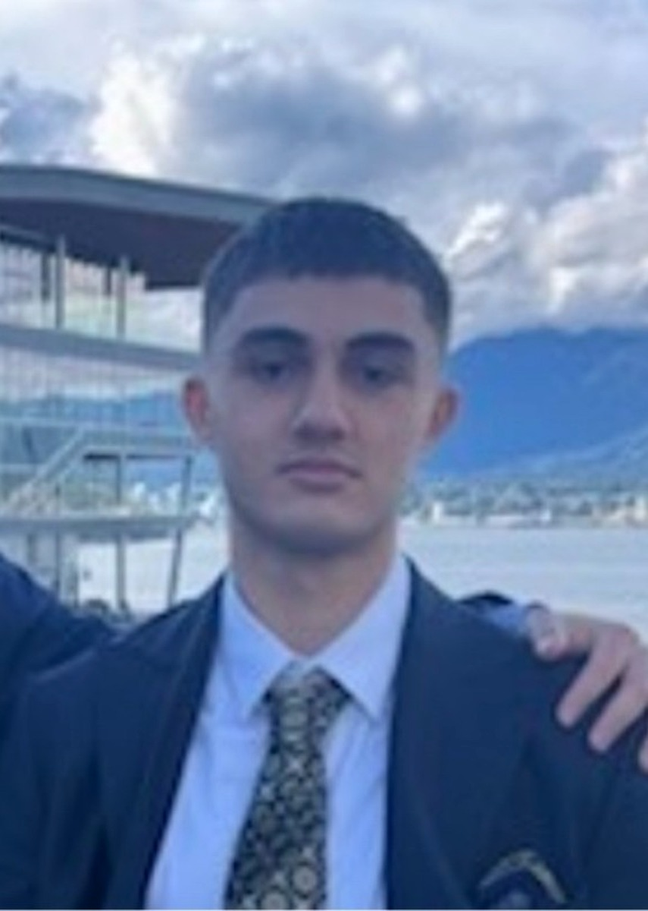

ABOUT ME
I build by asking: what would make this genuinely useful?
I am Rania Atmani, a Computer Engineering student at the University of British Columbia Okanagan. I am most energized by work that connects careful technical reasoning with a practical outcome for a real person, team, or workflow.

01
MY DIRECTION
Software is most interesting to me when it makes a system easier to understand, test, or use.
My interests span software development, QA and automation, embedded systems, hardware testing, and technical support. What connects those areas is the work of taking something complex - a system, a workflow, a prototype, or a technical issue - and turning it into something more reliable and easier to work with.
That is why my portfolio includes an HVAC field-service application, an interactive Java algorithm visualizer, browser-based game systems, and embedded-control prototypes. Each one begins with a different problem, but all of them require the same habits: define what should happen, build the core carefully, test and document it, then improve the experience around it.
02
EDUCATION & EXPERIENCE
My engineering background.
2025 - 2028
University of British Columbia Okanagan
BASc Computer Engineering, Co-op Program
Building a foundation across data structures, object-oriented programming, digital logic, signals and communication systems, electric circuits, numerical methods, and design studio work.
2024 - 2025
Douglas College
Engineering Foundations Certificate · Honour Roll
Completed a broad engineering foundation that strengthened mathematics, programming, technical communication, and structured problem solving.
2024 - 2025
Onsite Heating & Cooling
Assistant Technician
Supported service-call readiness, tools and parts preparation, technician notes, follow-up tracking, and field documentation. This experience directly influenced the workflow and feature choices behind Onsite Heating Pro.
2022 - 2025
All West Heating
Administrative and Field Assistant
Contributed more than 600 hours across scheduling, invoice and parts records, service documentation, installation support, safety checks, and customer follow-up.
HOW I WORK
I care about the details that make a technical project trustworthy.
Start from requirements
Identify who the work is for, what the core behavior should be, and what would count as a useful first version.
Make work traceable
Use setup notes, validation checks, clear naming, status updates, and practical documentation so the next person can understand what happened.
Test the edges, not just the happy path
Think through states, missing data, unexpected inputs, real user workflows, and the gap between expected and observed behavior.
Keep learning through building
Projects are my way of reinforcing theory, getting feedback from real constraints, and steadily taking on more technical depth.
03
CURRENT FOCUS
Where I am growing next.
Software engineering fundamentals
Data structures & algorithms
React + TypeScript applications
Testing & validation habits
Embedded control systems
Hardware-software integration
Technical documentation
Engineering design teams
LET'S CONNECT